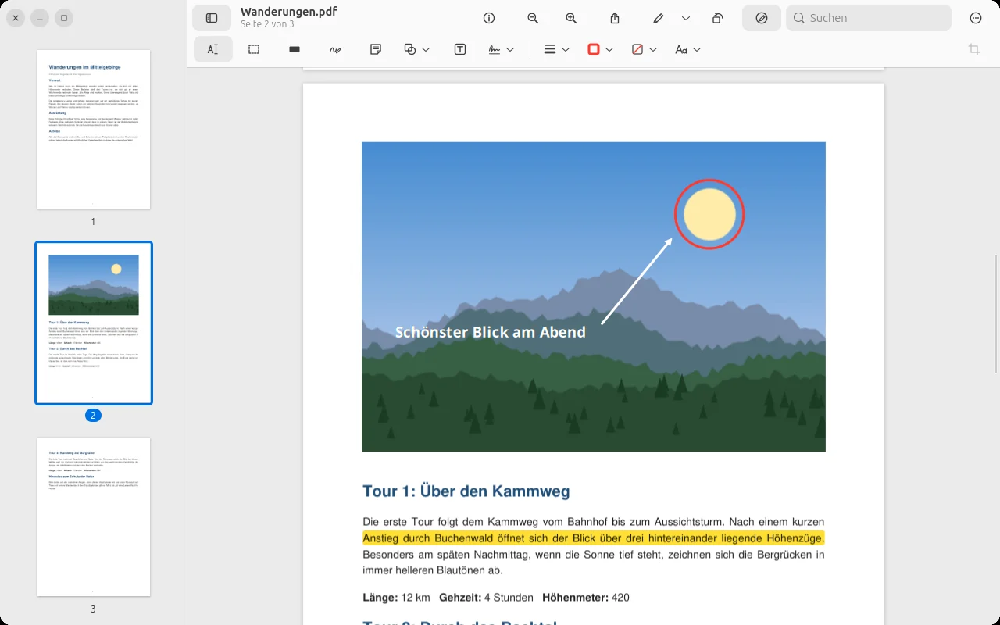
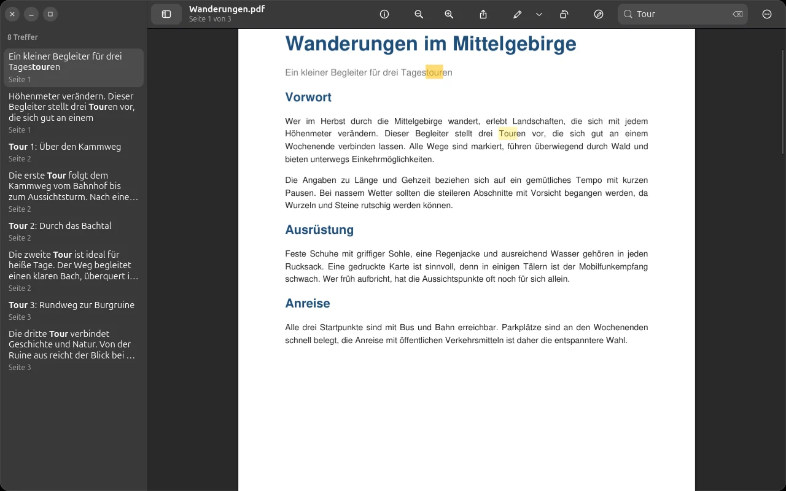
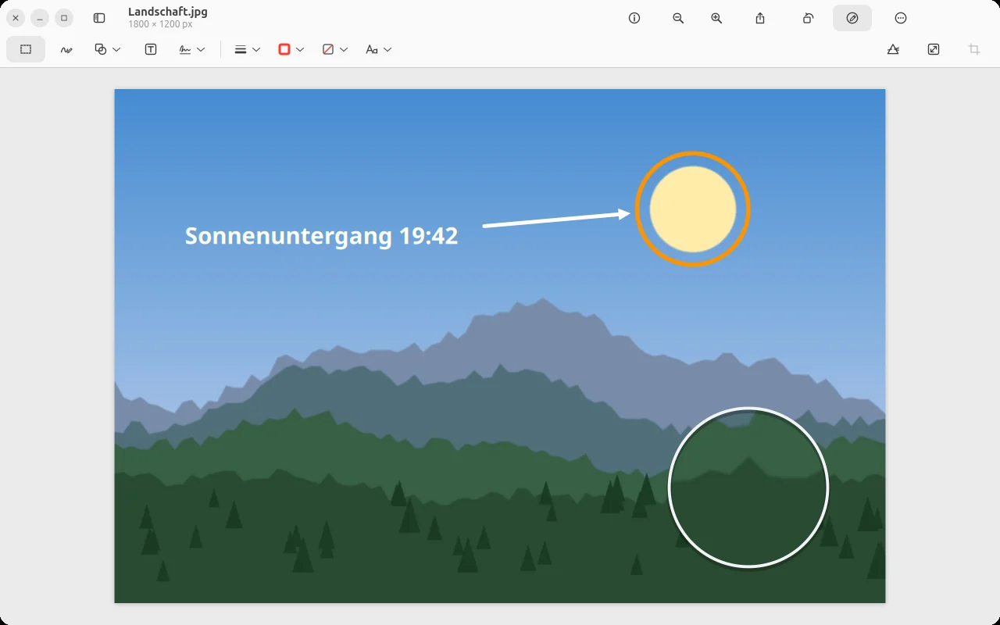
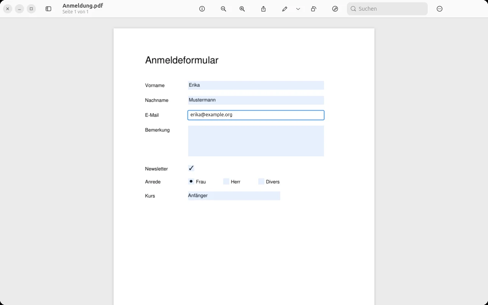
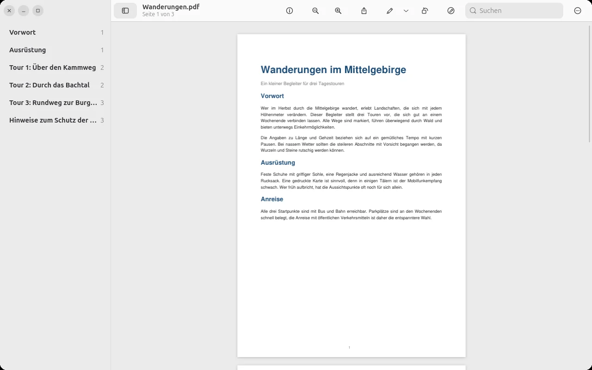

Prevux
Bilder und PDFs ansehen, markieren, unterschreiben und ausfüllen – so vertraut wie Vorschau auf dem Mac, jetzt auf Linux.
Version 0.9 Beta · kostenlos · gemeinfrei (CC0)
Bilder und PDFs ansehen, markieren, unterschreiben und ausfüllen – so vertraut wie Vorschau auf dem Mac, jetzt auf Linux.
Version 0.9 Beta · kostenlos · gemeinfrei (CC0)
Vorschau ist eines der unscheinbarsten Programme auf dem Mac – und eines, das man sofort vermisst, wenn es fehlt.
Mit Vorschau öffnet man Bilder und PDFs in Sekunden, markiert Text, unterschreibt Verträge, füllt Formulare aus, schneidet Bilder zu und sortiert Seiten um. Ohne Konto, ohne Abo, ohne Werbung. Für viele Menschen ist genau das ein echter Grund, bei macOS zu bleiben.
Prevux will diesen Grund beseitigen. Es übernimmt Aufbau, Werkzeuge, Tastenkürzel und sogar die Menübegriffe von Vorschau – „Ablage“, „Sichern“, „Beschneiden“ –, damit sich der Umstieg auf Linux nicht wie ein Neuanfang anfühlt, sondern wie ein Umzug in eine neue Wohnung, in der die Möbel schon am gewohnten Platz stehen. Die Gestaltung orientiert sich an Apples Human Interface Guidelines, wo sie zu einem Linux-Desktop passen. Alle Symbole sind eigene Entwürfe, und Prevux verwendet die Schriften deines Systems.
Verträge, Ausweise, Kontoauszüge, Arztbriefe: Was man in einem PDF-Programm öffnet, ist oft das Privateste überhaupt. Prevux ist deshalb von Grund auf so gebaut, dass nichts deinen Rechner verlässt.
Prevux enthält keinen Code, der eine Verbindung ins Netz aufbaut. Keine Telemetrie, keine Statistiken, keine Absturzberichte, keine Update-Abfragen.
Keine Anmeldung, kein Abo, keine Synchronisierung. Deine Dateien werden nur dort gelesen und gespeichert, wo du es willst.
Außer deinen Dokumenten merkt sich Prevux nur deine Unterschriften – in einer Datei, die nur du lesen kannst – und trägt geöffnete Dateien in die übliche Liste „Zuletzt verwendet“ ein.
Geschwärzter Text, Grafiken und Bildpunkte werden beim Sichern wirklich aus dem PDF entfernt – nicht nur mit einem schwarzen Balken überdeckt.
Jede Zeile von Prevux ist auf GitHub einsehbar. Du musst niemandem vertrauen – du kannst nachsehen.
Keine Cookies, kein JavaScript, keine Statistik, keine eingebundenen Schriften oder Dienste von Dritten. Der Server führt für diese Seite keine Zugriffsprotokolle.
Die Werkzeuge sitzen dort, wo du sie suchst, und heißen so, wie du es gewohnt bist.
Skizzieren mit Formerkennung, Formen, Pfeile, Sprechblasen, Lupe, Hervorheben, Textfelder und Notizen – alles später noch bearbeitbar.
Textmarker in mehreren Farben, Unterstreichen und Durchstreichen – gespeichert als normale PDF-Anmerkungen, die jedes Programm anzeigt.
Unterschrift einmal mit Maus, Touchpad oder Stift zeichnen und mit einem Klick in jedes Dokument einsetzen.
Textfelder, Ankreuzfelder, Optionen und Auswahllisten direkt im PDF ausfüllen, mit Tab zum nächsten Feld.
Seiten drehen, umsortieren, löschen, leere Seiten einfügen und per Ziehen zwischen PDFs kopieren.
Beschneiden, drehen, spiegeln, Größe und Farbe anpassen – mit Widerrufen für jeden Schritt.
Volltextsuche mit Trefferliste in der Seitenleiste, Inhaltsverzeichnis und Miniaturen.
Prevux folgt dem Erscheinungsbild deines Systems und fühlt sich auf GNOME wie zu Hause an.
Alle Bilder zeigen Beispieldokumente, die eigens für diese Seite erstellt wurden.




Prevux braucht GTK 4, libadwaita ab Version 1.8 und Python. Entwickelt und getestet wird es auf Ubuntu 26.04 LTS.
sudo apt install python3-gi gir1.2-gtk-4.0 gir1.2-adw-1 git
git clone https://github.com/veritasX1/prevux.git
cd prevux
./install.shDanach findest du Prevux im Anwendungsmenü und unter „Öffnen mit“. Soll Prevux künftig alle PDFs und Bilder öffnen:
xdg-mime default io.github.veritasx1.Prevux.desktop application/pdf image/png image/jpeg image/webp image/tiff image/gif image/bmpWie auf dem Mac – nur mit Strg statt ⌘ und Alt statt ⌥.
| Markierungs-Symbolleiste | Strg ⇧ A |
| Links / rechts drehen | Strg L / Strg R |
| Beschneiden | Strg K |
| Text hervorheben | Strg ⇧ H |
| Originalgröße / ganze Seite | Strg 0 / Strg 9 |
| Miniaturen / Inhaltsverzeichnis | Strg Alt 2 / 3 |
| Suchen | Strg F |
Prevux ist im Alltag voll benutzbar und öffnet auf dem Rechner seines Entwicklers bereits alle PDFs und Bilder. Die Version 0.9 heißt trotzdem Beta, weil die Oberfläche bisher nur auf Deutsch gepflegt ist. Für Version 1.0 geplant sind:
Fehler gefunden oder eine Idee? Schreib sie gern in den Issue-Tracker auf GitHub.